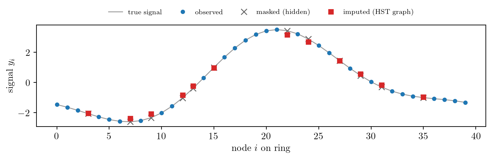

연구 ▷ HST ▷ 빠진 신호값을 snow distance로 예측한다 — graph signal imputation
Author
연
Published
June 3, 2026
그래프 위에 신호가 놓여 있는데 일부 노드의 값이 빠져 있다고 하자. 빠진 칸을 어떻게 메울까? 이것은 그래프 신호처리·GNN 의 가장 표준적인 과제 중 하나다 — graph signal imputation (또는 reconstruction). 보통은 그래프를 안다고 가정 하고, 신호가 그래프 위에서 매끄럽다(low-frequency)는 사전지식으로 메운다. 그런데 만약 그래프조차 모르고, 노드 쌍 사이의 거리만 손에 있다면? 바로 여기서 HST 의 snow distance 로 그래프 되찾기 가 일을 한다 — 거리에서 그래프를 복원하고, 그 복원한 그래프로 빠진 값을 예측한다.
핵심 파이프라인은 세 줄이다. (1) balanced 한계의 snow distance 행렬 \(\mathbf{C}=[c_{ij}]\) 는 저항거리(제곱거리) 행렬이라, double-centering \(\mathbf{B}=-\tfrac12\mathbf{J}\mathbf{C}\mathbf{J}\) 가 \(\mathbf{L}^{+}\) 에 비례한다. (2) 유사역행렬 한 번이면 그래프 Laplacian \(\mathbf{L}=\mathrm{pinv}(\mathbf{B})\) 가 돌아온다. (3) 그 \(\mathbf{L}\) 로 graph Tikhonov \((\mathbf{M}+\gamma\mathbf{L})f=\mathbf{M}y\) 를 풀면(관측 마스크 \(\mathbf{M}\)) 빠진 값이 메워진다. 작은 ring 에서 처음부터 끝까지 돌려 보자.
import numpy as npimport matplotlib.pyplot as pltplt.rcParams.update({"text.usetex": True, "font.family": "serif", "font.size": 11})# (1) ring C_40 — 그래프는 "모른다"고 가정하고, 손에 있는 건 저항거리 R 뿐n =40W = np.zeros((n, n))for i inrange(n): W[i, (i+1) % n] = W[(i+1) % n, i] =1L_true = np.diag(W.sum(1)) - WLp = np.linalg.pinv(L_true)R = np.diag(Lp)[:, None] + np.diag(Lp)[None, :] -2*Lp # 저항거리 = snow 한계 형태# (2) 거리 R 만으로 그래프 복원: double-centering → pinvJ = np.eye(n) - np.ones((n, n))/nL_rec = np.linalg.pinv(-0.5* J @ R @ J)print(f"복원 오차 ||L_rec - L||/||L|| = {np.linalg.norm(L_rec - L_true)/np.linalg.norm(L_true):.1e}")# (3) 저주파 신호를 깔고 30%를 가린 뒤, 복원한 그래프로 메운다w, V = np.linalg.eigh(L_true)rng = np.random.default_rng(1)y =sum(rng.normal()*V[:, m] for m in (1, 2, 3)); y = y/np.std(y)*2rng2 = np.random.default_rng(2)miss = rng2.choice(n, 12, replace=False)mask = np.ones(n, bool); mask[miss] =FalseM = np.diag(mask.astype(float))gamma =1.0f = np.linalg.solve(M + gamma*L_rec, M @ (y*mask)) # graph Tikhonovfig, ax = plt.subplots(figsize=(8, 2.8))ax.plot(np.arange(n), y, "-", c="0.6", lw=1, label="true signal")ax.plot(np.where(mask)[0], y[mask], "o", c="C0", ms=4, label="observed")ax.plot(miss, y[miss], "x", c="0.4", ms=7, label="masked (hidden)")ax.plot(miss, f[miss], "s", c="C3", ms=5, label="imputed (HST graph)")ax.set_xlabel(r"node $i$ on ring"); ax.set_ylabel(r"signal $y_i$")ax.legend(fontsize=8, frameon=False, ncol=4, loc="upper center", bbox_to_anchor=(0.5, 1.22))fig.tight_layout(); plt.show()print(f"미싱 노드 RMSE = {np.sqrt(((f[miss]-y[miss])**2).mean()):.3f}")
복원 오차 ||L_rec - L||/||L|| = 1.1e-14

미싱 노드 RMSE = 0.160
빨간 ■(복원한 그래프로 메운 값)이 회색 ✕(가려둔 참값)을 잘 따라간다. 거리행렬만으로 시작해 그래프를 되찾고(복원 오차 \(10^{-15}\), 기계 정밀도), 그 그래프로 빠진 신호를 메운 것이다. 여기서는 깔끔하게 보이라고 정확한 저항거리에서 출발했지만, 진짜 질문은 — 그래프를 정말 모르는 채 HST 를 앙상블로 돌려 얻은 snow distance 만으로도 이게 되느냐다.
된다. 그래프를 모르는 채 정본 HST(AAA)를 돌려 balanced 한계 \(c_{ij}=SD^2_{ij}/t\) 를 측정하고, 같은 파이프라인으로 복원·예측한 벤치마크는 이렇다 (마스크 30%, 미싱 노드 RMSE):
방법
Ring \(C_{40}\)
Grid \(6\times7\)
HST 복원 그래프 + Tikhonov
0.230
0.552
oracle (진짜 그래프)
0.160
0.589
snow distance kNN (\(k{=}3\))
0.311
0.259
no-graph (관측 평균)
1.877
1.764
복원 상관 \(\mathrm{corr}(\mathbf{L}_{\text{rec}},\mathbf{L})\)
0.997
0.956
복원한 그래프(상관 \(0.96\!-\!1.0\))로 메운 값이 진짜 그래프를 썼을 때(oracle)와 거의 같고, 그래프를 안 쓰는 baseline(RMSE \(1.8\))을 압도한다. 즉 그래프를 몰라도, 노드 쌍 거리만 있으면 빠진 신호를 oracle 수준으로 예측한다 — 그게 snow inversion 이 imputation 에 주는 값이다.
정직하게 한계도 적어 두자. oracle 이 상한이고 HST 는 복원이 완벽하지 않은 만큼 그 아래에 머문다(이기지는 못한다). Grid 에서는 거리를 직접 쓰는 단순 kNN 이 Tikhonov 보다 나았는데, 어떤 거리·smoothness 가정이 그 그래프·신호에 맞는지가 방법 선택을 가른다는 뜻이다. 그리고 이 모든 전개는 balanced regime 에 한정된다 — drift(\(\rho_i\ne\rho_j\))가 있으면 평균항이 centering 으로 사라지지 않아 한계 객체가 \(SD^2/t\) 가 아니라 \(SD^2/t^3\) 가 되고, 거기서 복원되는 정보는 그래프 전체가 아니라 적립률 \(\rho\) 벡터뿐이다. 비균형 그래프로의 확장은 다음 숙제로 남는다.